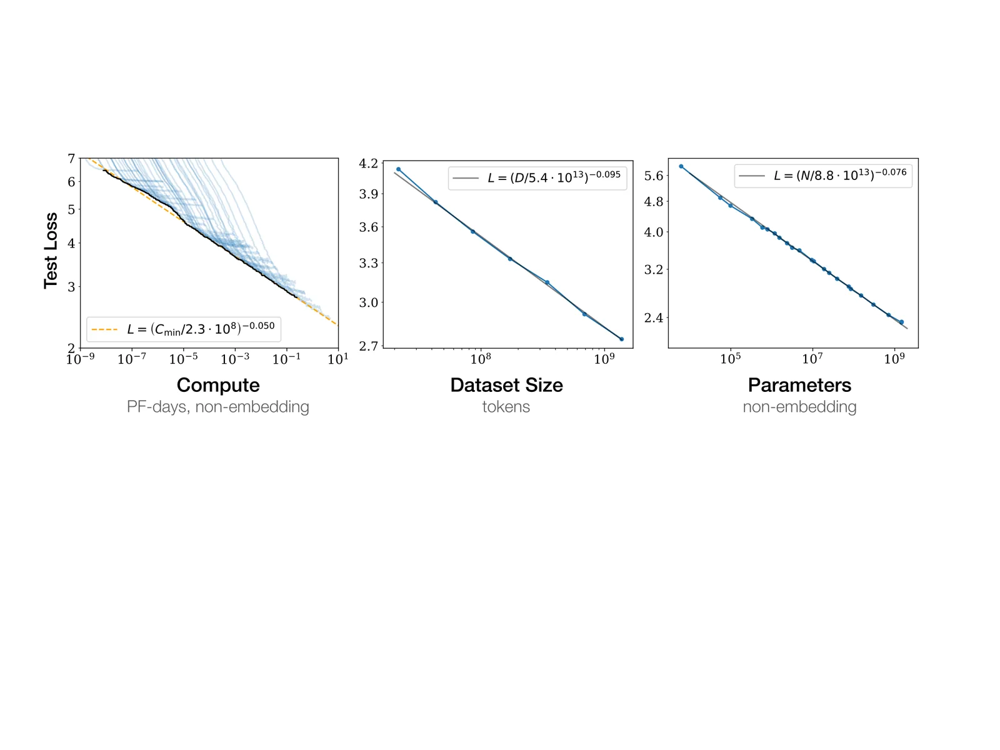
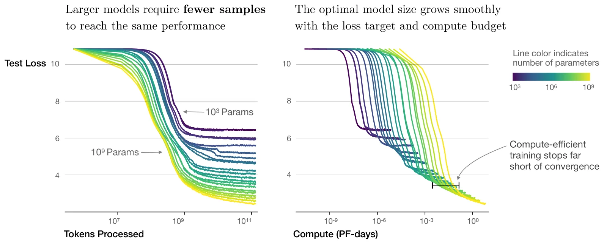
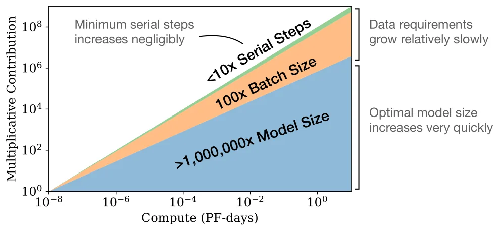
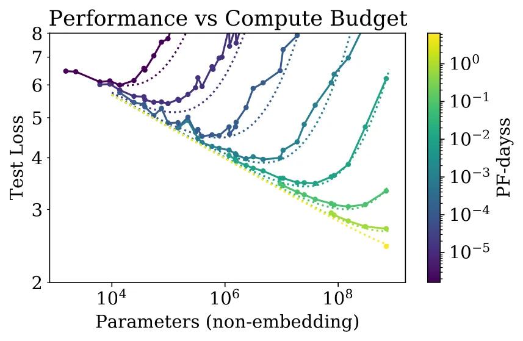

Scaling Laws for Neural Language Models
预印本: arXiv 2001.08361 (2020)
作者: Jared Kaplan, Sam McCandlish, Tom Henighan, Tom B. Brown, Benjamin Chess, Rewon Child, Scott Gray, Alec Radford, Jeffrey Wu, Dario Amodei (OpenAI / Johns Hopkins)
问题动机
语言模型表现看起来同时取决于架构、参数量、数据、算力。如果没有可外推的定量关系，就无法回答「固定预算应该把钱花在更大的模型还是更多的数据上」。作者用 Transformer 在 WebText2 上把这三件事扫了多个数量级，目标是交叉熵，不是下游准确率。本主题后面所有迁移/微调定律，都把这里的 L(N,D) 当 from-scratch 参照系。
核心想法
在不被另外两个因子卡住时，测试 loss 对非 embedding 参数 N、数据 D、最优分配下的算力 C_{\min} 分别呈平滑幂律，跨 6–8 个数量级。形状（深宽比、头数）几乎不影响。算力最优策略是：把大部分新增算力用来把模型做大，用相对少的数据，并且远在收敛前停下来。大模型显著更样本高效。
方法细节

三个单因子定律
数据足够、训到收敛：
（N 为非 embedding 参数。）
模型足够大、早停：
算力受限、模型大小与 batch 都取最优、有效算力 C_{\min}：
这些数字针对 WebText2 与当时的分词；N_c、D_c 会随分词变，没有绝对含义。翻倍参数大约把 loss 乘以 2^{-\alpha_N}=0.95。趋势弱依赖于深度/宽度：深宽比变 40 倍，loss 只差几个百分点。
联合 L(N,D) 与过拟合
同时依赖 N 和 D 的早停测试 loss：
该式满足：N\to\infty 回到 L(D)，D\to\infty 回到 L(N)，且在 D=\infty 处对 1/D 解析。联合拟合（与单因子略有差别）：\alpha_N=0.076，\alpha_D=0.103，N_c=6.4\times 10^{13}，D_c=1.8\times 10^{13}。过拟合幅度只依赖比值 N^{\alpha_N/\alpha_D}/D\approx N^{0.74}/D：模型增大 8 倍，数据大约只需增大 5 倍即可避免惩罚。最小约 2\times 10^7 token（每 epoch 仅约 40 步）拟合变差。
训练步数形式：
计算近似 C\approx 6NBS。
关键结果


- 最优模型大小 N(C_{\min})\propto C_{\min}^{0.73}：算力 \times 10，模型约 \times 5.5，数据只需约 \times 1.8（D\sim C^{0.27}）。Serial steps S_{\min}\propto C_{\min}^{0.03}，几乎不涨；多出来的 token 主要用来加大 batch（B_{\text{crit}} 约 \propto L^{-4.8}）。
- 因此「算力最优」= 很大的模型 + 远未收敛就停。一直训到收敛是算力低效的。
- 换分布评估：迁移 loss 相对训练验证集约有一个恒定偏移，趋势仍跟随原分布表现。
- Transformer 明显优于同规模 LSTM。
- 临界 batch 在最大模型收敛时大约 1–2M tokens，仍可用梯度噪声 scale 估计。

作者也指出一个内在矛盾：按 L(C_{\min}) 外推的 loss 最终会低于按缓慢增长的 D(C_{\min}) 所允许的 L(D)。交点被解释为 Transformer LM 触及性能上限的估计位置——定律必须在那之前失效。
局限与延伸阅读
局限：
- 只建模交叉熵，不建模下游准确率；「transfer 随测试表现变好」只是分布偏移下的 CE 偏移。
- 算力最优结论强烈偏向「加参数、少数据、早停」。Hoffmann et al. 后来用更充分的 token 扫描推翻了 N\propto C^{0.73}。
- 最小 D 拟合差；正则与数据增强未系统扫。
- N_c、D_c 依赖词表，不能跨分词比较绝对值。
延伸阅读：
- Hoffmann et al.（
2203.15556-chinchilla）：同一问题的修正——N 与 D 应近似等比 scale - Hernandez et al.（
2102.01293-scaling-laws-transfer）：把本篇的 L(N,D) 用作 from-scratch 尺子，定义 D_T - 本主题的 Q1/Q2 都默认读者熟悉这里的 N、D、C 坐标系